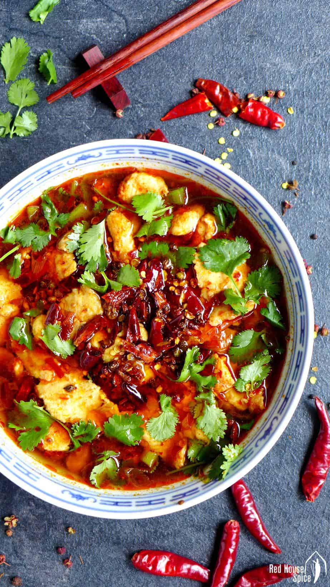
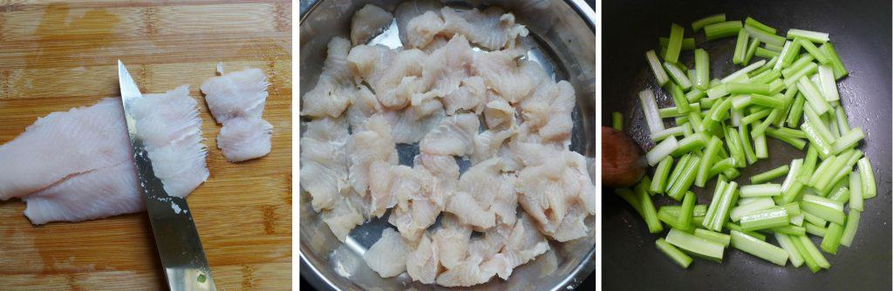
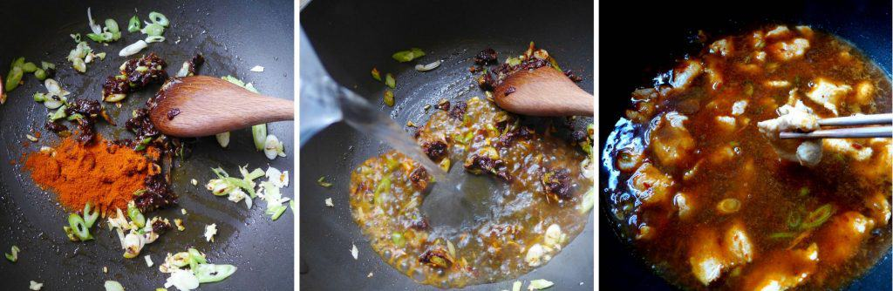
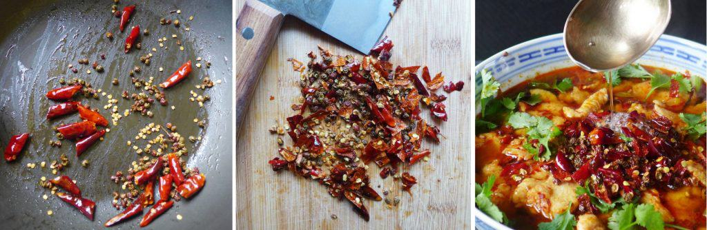

Sichuan Boiled Fish (水煮鱼)

Literally, the Chinese name of Sichuan boil fish “Shui Zhu Yu (水煮鱼)”
means water boiled fish. The marinated fish slices are poached briefly in
seasoned water. They taste very tender, succulent and packed with flavour.
As one of the most pungent Chinese dishes, authentic Sichuan boiled fish
is famous for its hotness. This recipe was obtained from Red House
Spice by
Wei Guo.
The Recipe
Fish Marinade
Ingredients
- 9 oz. skinless, boneless fish fillet (250 g)
- 1 pinch salt
- 1 pinch white pepper
- 1 teaspoon Shaoxing rice wine
- 1 teaspoon corn starch
Instructions
- Slice the fish fillet diagonally. Marinate with salt, white pepper,
Shaoxing rice wine, and corn starch.
Spices
Ingredients
- 1/2 teaspoon cooking oil
- 15 dried chili
- 2 teaspoon Sichuan peppercorn
Instructions
- In a wok, fry dried chili and Sichuan pepper in oil over low heat
until fragrant.
- Chop coarsely when cooled.
Vegetables
ingredients
- 1 teaspoon cooking oil
- 9 oz. celery cut into thin strips or beansprouts (250 g)
Instructions
- In the same wok that you used to fry the spices, heat oil over medium
heat, stir in celery.
- Cook for 1.5 minutes (30 seconds if bean sprouts). Then transfer
to serving bowl.
Broth
Ingredients
- 2 tablespoon cooking oil
- 2 clove garlic
- 1 teaspoon ginger
- 1 stalk scallions
- 1.5 tablespoon Sichuan chili paste
- 1 teaspoon chili powder
- 400 ml hot water or chicken stock
Instructions
- Heat up oil in the wok and fry garlic, ginger and spring onion.
- Add sichuan chili bean paste and chili powder.
- Pour in water or chicken stock then bring to full boil.
- Put in the fish slices.
- When finished cooking, pour the fish and soup into serving bowl
with the vegetables.
Garnish
Ingredients
- Chopped coriander
- 2 tablespoon cooking oil
Instructions
- Top up with fried spices and coriander.
- Heat up oil then pour over to sizzle spices.
- Serve immediately with plain rice.


